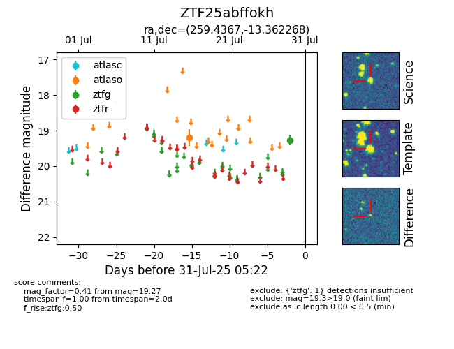

Target ZTF25abffokh at 2025-07-31 05:22, see:
FINK: fink-portal.org/ZTF25abffokh
Lasair: lasair-ztf.lsst.ac.uk/objects/ZTF25abffokh
ALeRCE: alerce.online/object/ZTF25abffokh
alt names
ZTF25abffokh (ztf,fink)
coordinates:
equatorial (ra, dec) = (259.4367,-13.36227)
galactic (l, b) = (9.7645,+13.81707)
photometry
last atlaso=19.20, ztfg=19.27
1 atlaso, 1 ztfg detections
